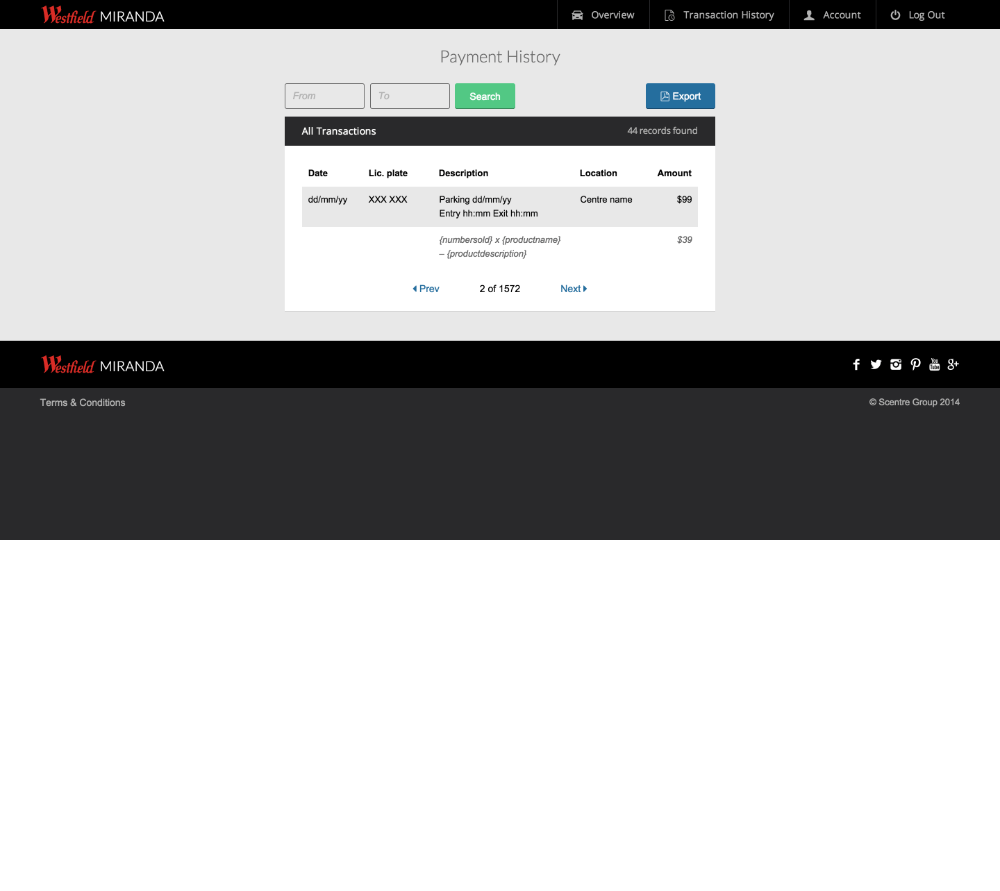

Why use a CSS framework?
Because CSS sucks!
- It's old, really old.
- It operates in a global namespace.
- It's very, very loose.
- Source order is critical.
- Specificity negates the above.
Our CSS best practices have been killing us
- Classitis!
- Never add a non-semantic element.
- Or, a non-semantic class.
- Use descendant selectors exclusively.
- Sites need to look exactly the same in every browser.
http://www.stubbornella.org/content/2011/04/28/our-best-practices-are-killing-us/
Writing CSS is easy, architecting it isn’t.

OOCSS to the rescue!
Separation of structure from skin
Separation of containers and content
As with any object-based coding method, the purpose of OOCSS is to encourage code reuse and, ultimately, faster and more efficient stylesheets that are easier to add to and maintain.
frame·work
noun
a basic structure underlying a system, concept, or text.
CSS Frameworks

UI Toolkits

@csswizardry Maybe frameworks have gone too far. Look at Bootstrap, it's not a framework, it's
a theme off the shelf.
— Allan Moreno (@heyallanmoreno)
March 13, 2014
@csswizardry bloat/ubiquitous design, usually. I like to start with something smaller first and build
upon it, which is why I made Cardinal.
— Chris Bracco (@cbracco)
March 13, 2014
@csswizardry 1) I need to understand what the author has in mind; 2) Sites are too unique.
—
Margus Holland (@margusholland)
March 13, 2014
@csswizardry Not built in a way that matches the designs I'm working to, not worth the hassle
of unpicking someone elses decisions
— Mark Skinner (@MarkSkinner_)
March 13, 2014
@csswizardry I think it’s because designing a framework under one set of conditions is hard enough;
designing for all is impossible.
— Robin Rendle (@robinrendle)
March 13, 2014
@csswizardry most projects are unique
— Matijs Brinkhuis (@matijs)
March 13, 2014
@csswizardry they're always far too opinionated, even when they're not.
— Martin
Wright (@wrightmartin)
March 13, 2014
@csswizardry Usually they do so much more than I actually need and there’s a lot of overhead of extra/un-needed
code.
— Val Head (@vlh)
March 13, 2014
@csswizardry Just the thought of having lots of styles that I may not use.
— Martin Bean
(@martinbean)
March 13, 2014
What is Scally?
Bits and pieces to construct UI.
Scally is a collection of tiny, composable, configurable, interdependent modules that you can piece together how you want, when you want — giving you a solid, scalable CSS architecture.
Key features
What it's good at
DRYness / Abstraction / Efficiency
- Providing a solid CSS architecture.
- Being unopinionated and highly configurable.
- Being performant (light-weight).
- Enabling rapid UI development.
- Ensuring UI's are consistent and less prone to breakages.
- Conventions and Guidelines.
What Scally isn't
An all-singing all-dancing UI Toolkit à la Twitter Bootstrap or Foundation.
Scally doesn't try to be all things to all men, it does one job and one job well, then gets out of your way.
How it came about?
Scally was created as an open source CSS framework during my time at Westfield Labs.
It extended and nicely packaged up the CSS framework that I'd been developing and using over many years as a UI developer.
The name…

Overview
(Very brief)
Install
bower install scally
app
│
└───assets
│
└───bower_components
│
└───scallyOr download zip from GitHub repo.
The Structure
Core / Layout / Components / Utilities
Campaign Monitor: Core / Components
Scally: Core / Layout / Components / Utilities
The master stylesheet
style.scss
@charset "UTF-8";
/* ============================================================================
@MASTER STYLESHEET
========================================================================= */
/* Your settings
========================================================================= */
@import "settings";
/* Scally framework
========================================================================= */
/**
* CORE.
*
* N.B. this is all mandatory for the Scally framework.
*/
// Settings
@import "bower_components/scally/core/settings/typography";
@import "bower_components/scally/core/settings/spacing";
@import "bower_components/scally/core/settings/breakpoints";
@import "bower_components/scally/core/settings/widths";
@import "bower_components/scally/core/settings/colours";
@import "bower_components/scally/core/settings/positioning";
@import "bower_components/scally/core/settings/cosmetics";
// Functions
@import "bower_components/scally/core/functions/convert-px-to-em-rem";
@import "bower_components/scally/core/functions/math-helpers";
@import "bower_components/scally/core/functions/string-replace";
// Mixins
@import "bower_components/scally/core/mixins/convert-px-to-em-rem";
@import "bower_components/scally/core/mixins/font-size";
@import "bower_components/scally/core/mixins/gradients";
@import "bower_components/scally/core/mixins/media-queries";
@import "bower_components/scally/core/mixins/generate-at-breakpoints";
@import "bower_components/scally/core/mixins/generate-percentage-classes-at-breakpoints";
@import "bower_components/scally/core/mixins/retina-bg-image";
@import "bower_components/scally/core/mixins/target-browsers";
@import "bower_components/scally/core/mixins/target-headings";
// Normalize
@import "bower_components/scally/core/normalize";
// Reset
@import "bower_components/scally/core/reset";
// Debug
@import "bower_components/scally/core/debug";
// Base
@import "bower_components/scally/core/base/root";
@import "bower_components/scally/core/base/abbreviation";
@import "bower_components/scally/core/base/forms";
@import "bower_components/scally/core/base/details";
@import "bower_components/scally/core/base/headings";
@import "bower_components/scally/core/base/horizontal-rule";
@import "bower_components/scally/core/base/links";
@import "bower_components/scally/core/base/media";
@import "bower_components/scally/core/base/paragraphs";
@import "bower_components/scally/core/base/print";
@import "bower_components/scally/core/base/viewport";
// Placeholders
@import "bower_components/scally/core/placeholders/c-bottom-spacing";
/**
* LAYOUT.
*/
// Main container
@import "bower_components/scally/layout/l-container";
// Grid
@import "bower_components/scally/layout/l-grid";
@import "bower_components/scally/layout/l-grid-pull";
@import "bower_components/scally/layout/l-grid-push";
// Side-by-side
@import "bower_components/scally/layout/l-side-by-side";
@import "bower_components/scally/layout/l-side-by-side-alt";
/**
* COMPONENTS.
*/
@import "bower_components/scally/components/button";
/**
* UTILITIES.
*/
@import "bower_components/scally/utilities/u-clear-fix";
@import "bower_components/scally/utilities/u-arrow";
@import "bower_components/scally/utilities/u-list";
@import "bower_components/scally/utilities/u-list-block";
@import "bower_components/scally/utilities/u-list-inline";
@import "bower_components/scally/utilities/u-text";
@import "bower_components/scally/utilities/u-widths";
@import "bower_components/scally/utilities/u-table";
@import "bower_components/scally/utilities/u-drop-down";
@import "bower_components/scally/utilities/u-alignments";
@import "bower_components/scally/utilities/u-toggle-visibility";
@import "bower_components/scally/utilities/u-image-replacement";
@import "bower_components/scally/utilities/u-link-complex";
@import "bower_components/scally/utilities/u-link-disguised";
@import "bower_components/scally/utilities/u-link-no-underline";
@import "bower_components/scally/utilities/u-momentum-scrolling";
@import "bower_components/scally/utilities/u-float";
@import "bower_components/scally/utilities/u-new-block-formatting-context";
@import "bower_components/scally/utilities/u-flex-embed";
@import "bower_components/scally/utilities/u-gpu-accelerated";
@import "bower_components/scally/utilities/u-position";
@import "bower_components/scally/utilities/u-display";
@import "bower_components/scally/utilities/u-spacing";
@import "bower_components/scally/utilities/u-divider";
@import "bower_components/scally/utilities/u-columns";
@import "bower_components/scally/utilities/u-overflow";
@import "bower_components/scally/utilities/u-overlay";
@import "bower_components/scally/utilities/u-cursor";
/* Your styles
========================================================================= */Settings
You can completely modify how Scally works without ever having to alter the framework itself. Simply redeclare
the settings you wish to change above the relevant
@import in the master style sheet e.g.
$font-size: 14;
$font-family-base: Arial, sans-serif;
@import "bower_components/scally/core/settings/typography";$colour-brand: #2aa198;
@import "bower_components/scally/core/settings/colours";$text-input-and-select-text-color: $colour-text-base;
@import "bower_components/scally/core/base/forms";What's included
Core
- /base
- /functions
- /mixins
- /placeholders
- /settings
- _debug.scss
- _normalize.scss
- _reset.scss
Layout
- _l-container.scss
- _l-grid.scss
- _l-grid-pull.scss
- _l-grid-push.scss
- _l-side-by-side.scss
- _l-side-by-side-alt.scss
Components
- _button.scss
Utilities
- _u-alignments.scss
- _u-arrow.scss
- _u-clear-fix.scss
- _u-columns.scss
- _u-cursor.scss
- _u-display.scss
- _u-divider.scss
- _u-drop-down.scss
- _u-flex-embed.scss
- _u-float.scss
- _u-gpu-accelerated.scss
- _u-image-replacement.scss
- _u-link-complex.scss
- _u-link-disguised.scss
- _u-link-no-underline.scss
Utilities
- _u-list-block.scss
- _u-list-inline.scss
- _u-list.scss
- _u-momentum-scrolling.scss
- _u-nbfc.scss
- _u-overflow.scss
- _u-overlay.scss
- _u-position.scss
- _u-spacing.scss
- _u-table.scss
- _u-text.scss
- _u-toggle-visibility.scss
- _u-widths.scss
Apply at breakpoints
When building responsive UI's it is a really common requirement to apply a style or a set of styles at a specific viewport.
Each Scally utility and layout module comes with this ability.
So if we wanted to hide a Call Us button on larger viewports we would use the Display utility to achieve this, applying these steps…
- Turn the feature on by changing the toggle setting to
truewhich will output (compile) the utility in a media query like so:@media (min-width: 40.0625em) { .u-hide-from-lap {display: none;} } - By default the
lapbreakpoint is used but you can change this to another breakpoint or add more breakpoints above the relevant@importin the master stylesheet:
This will output (compile):$u-display-breakpoints: (lap, 999); @import "bower_components/scally/utilities/u-display";@media (min-width: 40.0625em) { .u-hide-from-lap {display: none;} } @media (min-width: 56.3125em) { .u-hide-from-999 {display: none;} }
Scally's breakpoints
$breakpoints: (
"palm": 640,
"lap": 641,
"lap-large": 901,
"desk": 1200,
"desk-large": 1366
) !default;Demonstration
The Campaign Monitor application header
Scally version
66 lines (500b / 8kb gzipped incl. Scally)
.header {
background-color: $colour-blue-1;
a {
color: $colour-white;
text-decoration: none;
}
}
.header__arrow {border-top-color: $colour-blue-3;}
.header__nav-sub {
background-color: $colour-blue-2;
a {
color: $colour-blue-3;
&:hover,
&:focus {color: $colour-white;}
}
}
.header__branding__cm {@include font-size(26, normal)}
.header__branding__client__name {
color: $colour-blue-3;
@include to-rem(border-radius, 15);
transition: all 0.15s;
&:hover,
&:focus,
&.is-visible {
@include to-rem(box-shadow, inset 0 2 2 0 darken($colour-blue-1, 9%));
background-color: darken($colour-blue-1, 6%);
}
}
.nav-main {
@include to-rem(margin-left margin-right, -15);
li + li {
@include to-rem(border-left, 1 solid rgba(#fff, 0.1));
&:last-child {border-right: 0;}
}
li {@include to-rem(border-right, 1 solid rgba(#000, 0.1));}
a {
@include to-rem(padding, 4 15);
&:hover,
&:focus {color: $colour-blue-7;}
}
.is-active {
background-color: $colour-white;
@include to-rem(border-top-left-radius border-top-right-radius, $border-radius);
&,
&:hover,
&:focus {color: $colour-blue-1;}
}
}Current version
417 lines (2kb gzipped)
header.app {
width: 100%;
-webkit-font-smoothing: antialiased;
position: relative;
a,
a:link,
a:visited,
a:hover,
a:active {
color: #FFFFFF;
text-decoration: none;
cursor: pointer;
background-color: transparent;
}
.top {
background: $color-top;
width: 100%;
height: 34px;
padding: 0 3%;
-webkit-box-sizing: border-box;
-moz-box-sizing: border-box;
box-sizing: border-box;
.admin {
float: left;
a {
padding: 10px 25px 0px 0px;
height:24px;
color: $color-top-link;
font-size: 11px;
font-weight: bold;
display: inline-block;
@include transition(color 0.1s ease-out);
&:hover {color: $color-top-link-hover;}
&.selected {color: $color-site-name;}
}
&.side{
float: right;
a {padding: 10px 0px 0px 25px;}
}
}
}
.main{
background: $color-main;
width: 100%;
padding: 0 3%;
@include box-shadow(inset 0px -3px 0px 0px darken($color-main, 5%));
-webkit-box-sizing: border-box;
-moz-box-sizing: border-box;
box-sizing: border-box;
.title {
float: left;
.name-site {
font-size: 26px;
font-weight: bold;
color: $color-site-name;
display: inline-block;
padding: 26px 9px 26px 0px;
vertical-align: middle;
font-family: "Helvetica Neue", arial, Helvetica, sans-serif;
min-height: 37px;
}
.logo-site {
padding: 10px 9px 10px 0px;
display: inline-block;
vertical-align: middle;
}
.client-wrap {
display: inline-block;
position: relative;
}
.client {
position: relative;
top: 3px;
.name {
font-size: 15px;
font-weight: bold;
color: $color-top-link;
cursor: default;
font-family: "Helvetica Neue", arial, Helvetica, sans-serif;
}
&.many {
display: inline-block;
padding: 4px 25px 5px 10px;
position: relative;
cursor: pointer;
@include border-radius(15px);
@include transition(background 0.1s ease-out);
.name {
font-size: 16px;
font-weight: bold;
color: $color-top-link;
cursor: pointer;
}
&:hover,
&.selected {
background: darken($color-main, 5%);
@include transition(background 0.1s ease-out);
}
&:active,
&.selected {
@include box-shadow(inset 0px 1px 1px 0px darken($color-main, 10%));
top: 3px !important;
.client-name {
top: 1px;
position: relative;
}
&:after {top: 13px;}
}
&:after {
width: 0;
height: 0;
border-left: 4px solid transparent;
border-right: 4px solid transparent;
border-top: 4px solid $color-top-link;
content: "";
display: block;
position: absolute;
right: 10px;
top: 12px;
}
}
}
}
.primary {
float: left;
height: 31px;
clear: left;
margin-left: -15px;
margin-bottom: 3px;
a {
color: $color-primary;
padding: 0px 15px 0px 15px;
margin-top: 10px;
float: left;
display: inline-block;
font-size: 13px;
font-weight: bold;
height:21px;
border-right: rgba(0, 0, 0, 0.1) 1px solid;
border-left: rgba(255, 255, 255, 0.1) 1px solid;
@include transition(color 0.1s ease-out);
&:hover {color: $color-primary-hover;}
&:first-child {
border-left-color: $color-main;
&.selected {padding-left: 15px;}
}
&:last-child {border-right-color: $color-main;}
&.selected {
background: $color-primary-bg;
color: $color-primary-selected;
@include border-top-left-radius(4px);
@include border-top-right-radius(4px);
padding-top:10px;
padding-bottom: 3px;
margin-top: 0px;
border-color: $color-primary-bg;
&.sub,
.primary-nav-sub-colour & {background: $color-secondary-bg;}
}
&.selected-r {border-left-color: $color-main;}
&.selected-l {border-right-color: $color-main;}
}
&.side {
float: right;
clear: right;
margin-right: -15px;
a {
float: right;
&:first-child {
padding-left: 15px;
border-right-color: $color-main;
border-left-color: rgba(255, 255, 255, 0.1);
&.selected {padding-right: 15px;}
}
&:last-child {
border-left-color: $color-main;
border-right-color: rgba(0, 0, 0, 0.1);
}
&.selected {border-color: $color-primary-bg}
&.selected-r {border-right-color: $color-main;}
&.selected-l {border-left-color: $color-main;}
&.small {
font-size: 11px;
color: $color-primary-hover;
border: none !important;
&:hover {color: $color-site-name;}
&.selected {
background: none !important;
color: $color-site-name !important;
@include border-top-left-radius(0px);
@include border-top-right-radius(0px);
padding-top:0px;
margin-top: 10px;
cursor: default;
}
}
}
}
}
}
.secondary {
background: $color-secondary-bg;
height: 40px;
border-bottom: #EAEAEA 1px solid;
@include box-shadow(0px 1px 3px 0px #EFEFEF);
position: relative;
z-index: 100;
width: 100%;
padding: 0 3%;
-webkit-box-sizing: border-box;
-moz-box-sizing: border-box;
box-sizing: border-box;
a,
a:link,
a:visited {
color: $color-secondary;
padding: 15px 20px 0px 15px;
height: 25px;
float: left;
font-size: 11px;
font-weight: bold;
position: relative;
@include transition(color 0.1s ease-out);
&:hover,
&.selected {color: $color-primary-selected;}
&:first-child {padding-left: 0px;}
&:after {
@include border-radius(50%);
width: 4px;
height: 4px;
background: $color-dot;
display: inline-block;
float: left;
content: "";
position: absolute;
right: 0px;
top: 20px;
}
&:last-child:after {display: none;}
&.last:after {display: none;}
&.selected {
&:before {
width: 0;
height: 0;
border-left: 6px solid transparent;
border-right: 6px solid transparent;
border-bottom: 6px solid #EAEAEA;
content: "";
position: absolute;
top: 35px;
left: 50%;
margin-left: -9px;
display: block;
}
span {
&:before {
width: 0;
height: 0;
border-left: 6px solid transparent;
border-right: 6px solid transparent;
border-bottom: 6px solid #FFFFFF;
content: "";
position: absolute;
top: 37px;
left: 50%;
margin-left: -9px;
display: block;
}
}
}
}
}
.dropdown {
display: none;
background: #FAFAFA;
width:200px;
@include border-radius(4px);
@include box-shadow(0px 0px 3px 1px rgba(0, 0, 0, 0.15));
list-style: none;
position: absolute;
top: 45px;
left: 0px;
z-index: 99999;
ul {
width:100%;
@include border-radius(4px);
list-style: none;
margin: 0px;
li {
border-bottom: $color-dropdown-hover dotted 1px;
&:last-child {
border: 0px;
a {@include border-bottom-radius(4px);}
}
&:first-child {
a {@include border-top-radius(4px);}
}
&.selected {
a {background: $color-dropdown-hover;}
}
}
}
a {
display: block;
color: $color-secondary;
padding: 10px 15px;
text-align: left;
font-size: 11px;
font-weight: bold;
&:hover {background: $color-dropdown-hover;}
}
&:before {
width: 0;
height: 0;
border-left: 6px solid transparent;
border-right: 6px solid transparent;
border-bottom: 6px solid rgba(0, 0, 0, 0.2);
content: "";
position: absolute;
top: -7px;
left: 20px;
display: block;
z-index: 101;
}
&:after {
width: 0;
height: 0;
border-left: 6px solid transparent;
border-right: 6px solid transparent;
border-bottom: 6px solid #FAFAFA;
content: "";
position: absolute;
top: -6px;
left: 20px;
display: block;
z-index: 101;
}
.client-filter-wrap {
padding: 8px;
@include box-shadow(0px 1px 3px 0px rgba(0, 0, 0, 0.2));
display: block;
.client-filter {width: 168px;}
}
.client-result-wrap {
overflow-y: auto;
max-height: 315px;
position: relative;
}
}
}style.scss
Campaign Monitor
Core
- /base
- _links.scss
- _forms.scss
Components
- _header.scss
- _drop-down.scss
Scally
Core
- /base
- /functions
- /mixins
- /placeholders
- /settings
- _debug.scss
- _normalize.scss
- _reset.scss
Layout
- _l-container.scss
- _l-grid.scss
- _l-side-by-side-alt.scss
Components
- _button.scss
Utilities
- _u-arrow.scss
- _u-display.scss
- _u-drop-down.scss
- _u-list-block.scss
- _u-list-inline.scss
- _u-position.scss
- _u-spacing.scss
- _u-text.scss
- _u-widths.scss
Westfield Ticketless Parking project
A medium size UI built with Scally, around 3 weeks of effort.
14kb minified & gzipped (total weight) /
5kb (total weight of custom CSS)
Thank you
Further reading sections in the Scally documentation: